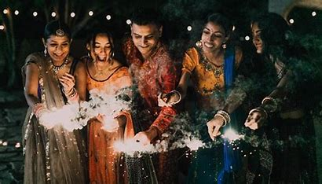
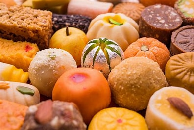

can i tell you something! 
Diwali is celebrated for several reasons, including1234:
Victory of light over darkness, good over evil, and knowledge over ignorance1.
Return of Lord Rama to Ayodhya2.
Birth of Lakshmi, the goddess of wealth, and her wedding to Lord Vishnu2.
The killing of demons like Narakasura, Shambhu, and Nishambhu2.
The release of Guru Hargobind2
Shall I Ask Another Question For You??
Why we eat sweet during the diwali celebration??

celebration is complete without food, and Diwali is all about sweets. While savory snacks have their place, sweets, called mithai, have special significance. They represent purity, joy, the sweetness of life, and good luck for the future. Sweets serve as offerings in religious rituals, but they aren't just for the gods.
I Trust Many God because Families come together to perform puja (prayer) during Diwali. The goddess Lakshmi, the deity of wealth and prosperity, is revered on this occasion
. Lakshmi puja is a significant part of Diwali,
where families seek the blessings of the goddess for financial well-being and abundance.
#safely Enjoy With Your Family!
created by S.Thirumurugan
 I Trust Many God because Families come together to perform puja (prayer) during Diwali. The goddess Lakshmi, the deity of wealth and prosperity,
I Trust Many God because Families come together to perform puja (prayer) during Diwali. The goddess Lakshmi, the deity of wealth and prosperity,